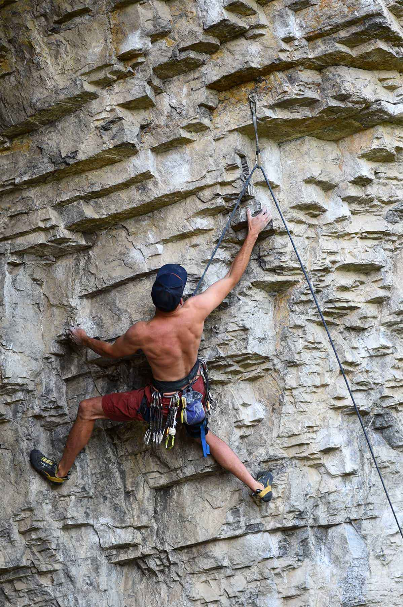

Línuklifur (e. top rope) er tegund af klettaklifri þar sem klifrarinn er tryggilega bundinn í klifurlínu sem liggur upp í gegnum fasta akkerisfestingu efst í leiðinni og aftur niður til tryggjarans sem stendur við rætur leiðarinnar. Ef klifrarinn dettur heldur línan honum þar sem hann datt, og hann getur þá annaðhvort haldið áfram að klifra eða látið tryggjarann slaka sér rólega niður. Á klifurveggjum innandyra er hægt að nota sjálftryggingar (e. auto belay) til að stunda línuklifur einn.

Eðli málsins samkvæmt er bara hægt að stunda línuklifur á leiðum sem eru styttri en hálf lengd venjulegrar klifurlínu, sem þýðir einnar spannar leiðir sem eru undir 25-30 metrum á hæð. Línuklifur er líka notað í ísklifri og skyldum greinum eins og blönduðu klifri (e. mixed climbing) og þurrtólun (e. dry-tooling), og það er notað með sjálftryggingum bæði í keppni í hraðaklifri og í ísklifri.
Línuklifur er ein öruggasta tegund klettaklifurs og flestir byrjendur nota það. Áður en sportklifrið kom til sögunnar þótti það ekki góður siður að æfa leið í línuklifri (kallað headpointing eða hangdogging), en í dag er það viðurkennd aðferð til að undirbúa sig fyrir rauðpunkt (e. redpoint). Það telst ekki fyrsta frjálsa klifur leiðar (e. first free ascent) að klifra nýja leið í línuklifri, og af því að tryggjarinn getur hjálpað klifraranum er þetta strangt til tekið ekki frjálst klifur (þó sumir segi að með slaka á línunni sé það sambærilegt). Þess vegna er gerður greinarmunur á línuklifri og „venjulegu“ leiðsluklifri (e. lead climbing).
Við Munkaþverá er mjög flott línuklifursvæði með fullt af skemmtilegum leiðum. Mæli með að prófa.